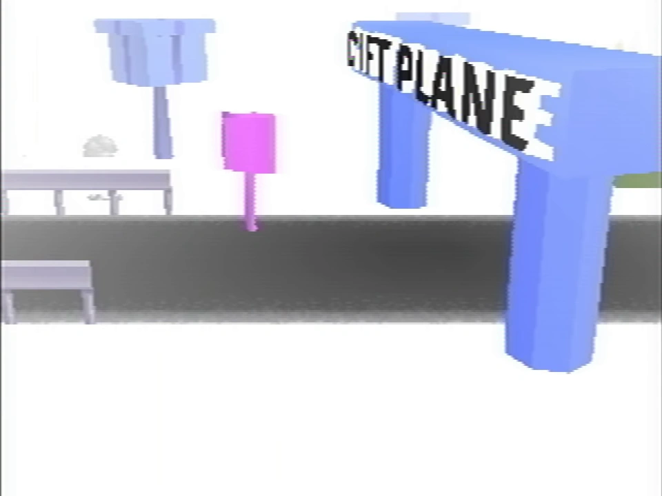
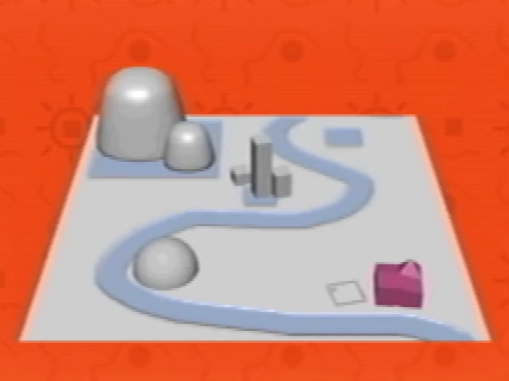

The Gift Plane

A concept map of the Gift Plane from the Extra Stuff menu.
The Gift Plane is the map world of the surface game of Petscop.
The entrance contains a pink sign, which reads:
The Gift Plane has closed indefinitely, and all personnel have left.
If you are unaware, The Gift Plane provided homes to over a hundred young Pets.
Unfortunately, we have failed to remove all of the Pets from their homes.
48 Pets remain here, at the time of writing.
We would strongly encourage you to visit our 8 homes and find some friends to take with you.
Every Pet is uniquely valuable. You should have no problem finding somebody that you love.
- The Gift Plane staff
Despite that the sign mentions 8 homes and 48 Pets, there is only one level, Even Care, which contains just 5 Pets.
In the Sound Test, Even Care's music is called "Even Care (Level 1)," afterwards is "Work Zone (Level 2)". Work Zone is never shown directly, but has been shown in a loading screen and in the Petscop Soundtrack. The music for Work Zone was used in Odd Care and earlier gens of Even Care.
In the Extra Stuff menu, a map of the Gift Plane is shown, though this may only be concept art. The map contains six landmarks - a pink house, an empty lot, a hill, three towers on a grey lot, two large hills on a grey lot, and an empty grey lot. Counting the three towers as separate landmarks, this adds up to eight landmarks.
Michael Hammond's gravestone uses a similar gift model to the gift boxes around the Gift Plane; his epitaph reads "Mike was a gift".
The Gift Plane is possibly a counterpart to the Newmaker Plane. There are parallels between rooms in Even Care (and Odd Care) that connect to certain areas in the hidden game, represented through the symbol blocks.
48 Pets and 8 homes planned may have some relation to the number of individuals who have played Petscop and the 8 ghost rooms.
| Gift Plane | Gift Plane · Even Care · Odd Care · Work Zone |
|---|---|
| Newmaker Plane | Newmaker Plane · Office · Grave room · Tool room · Quitter's Room · Child Library · Windmill · Party room · House · School |
{kind=link}
{kind=link}
{kind=link}
{kind=link}